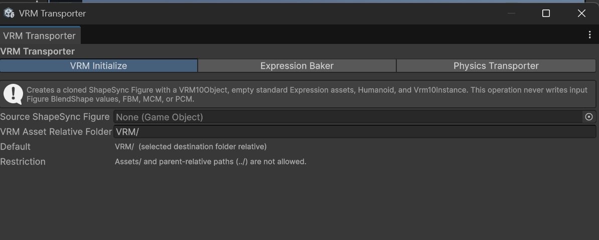
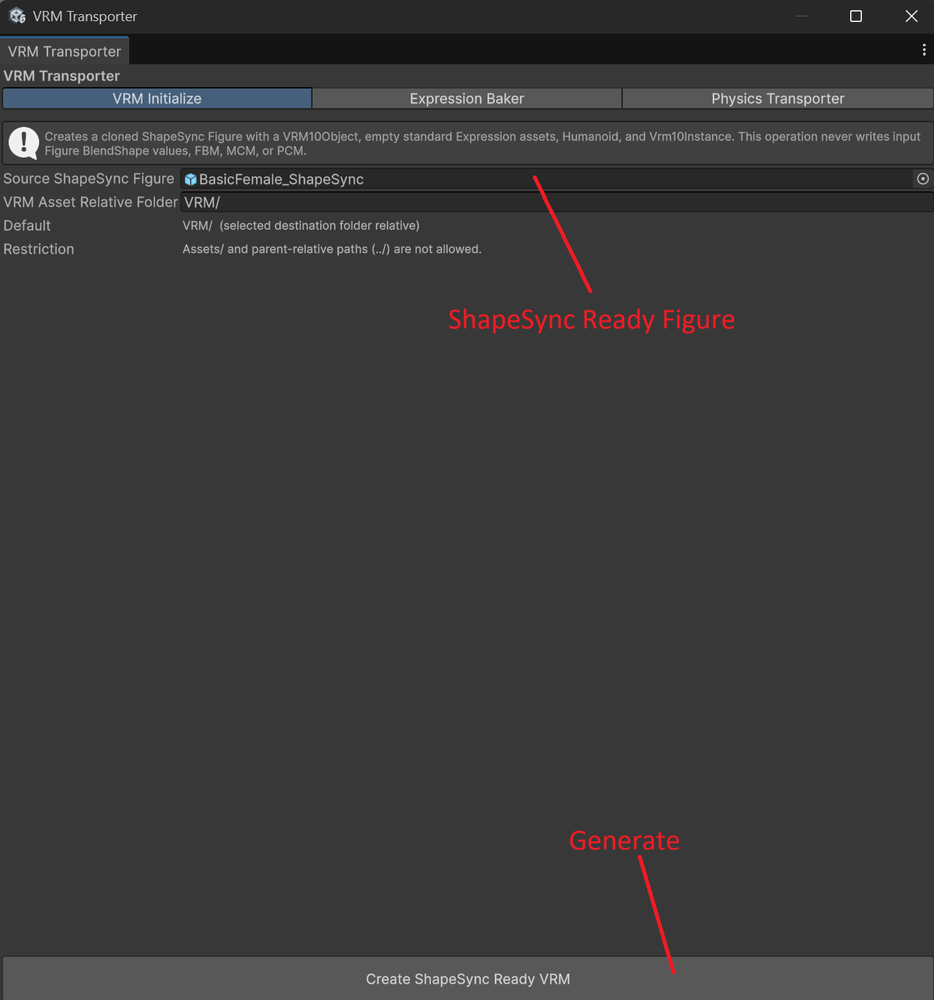
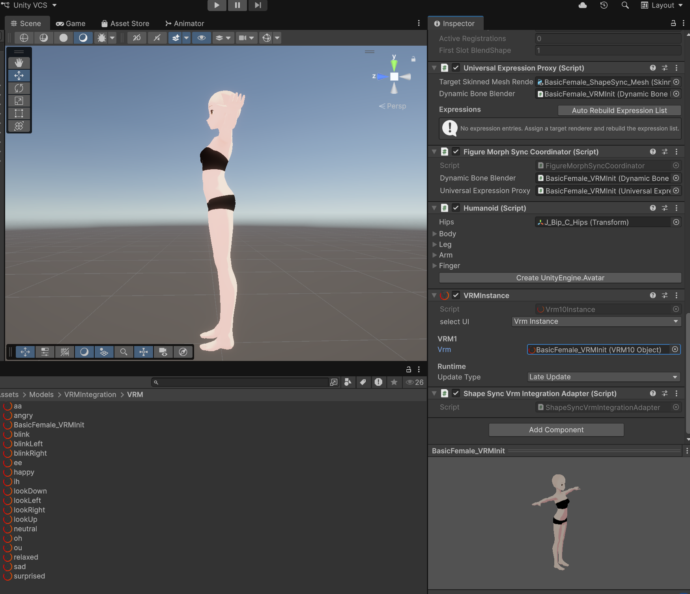
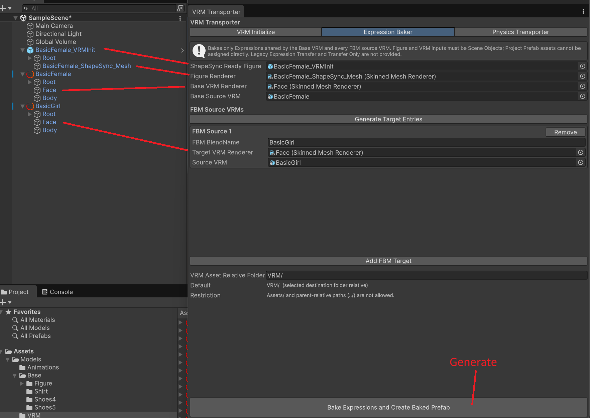
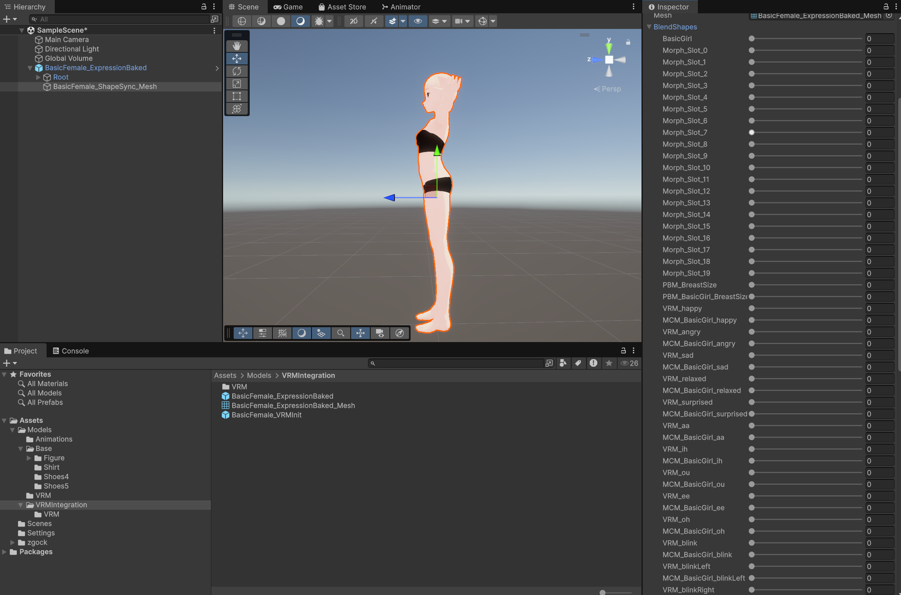
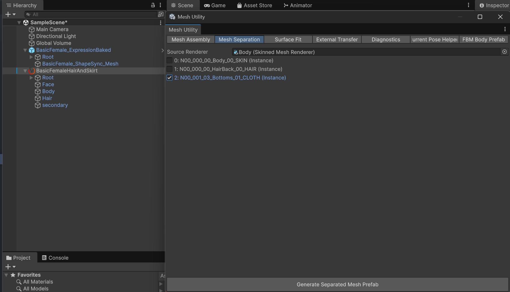
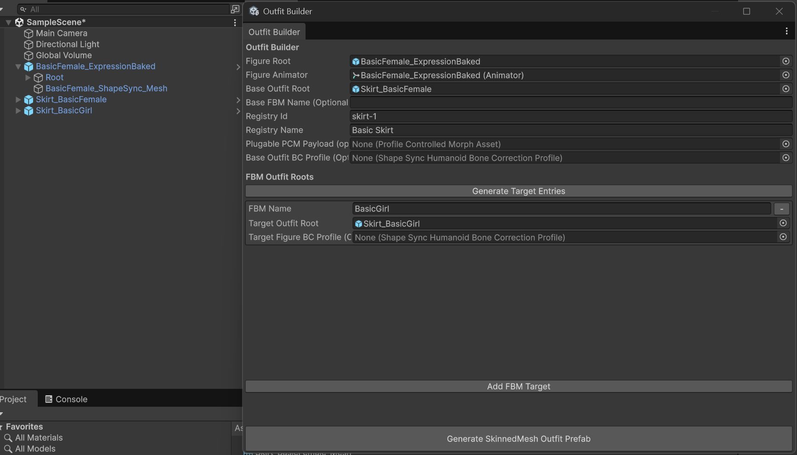
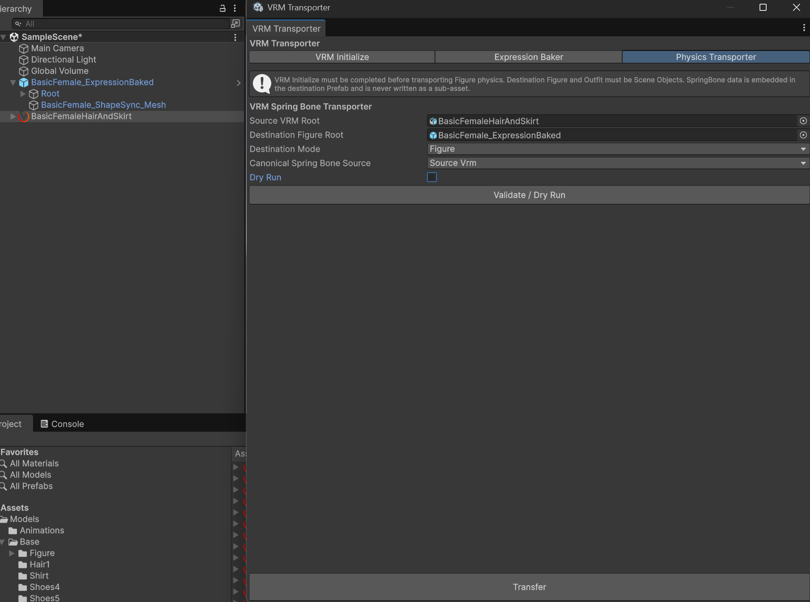
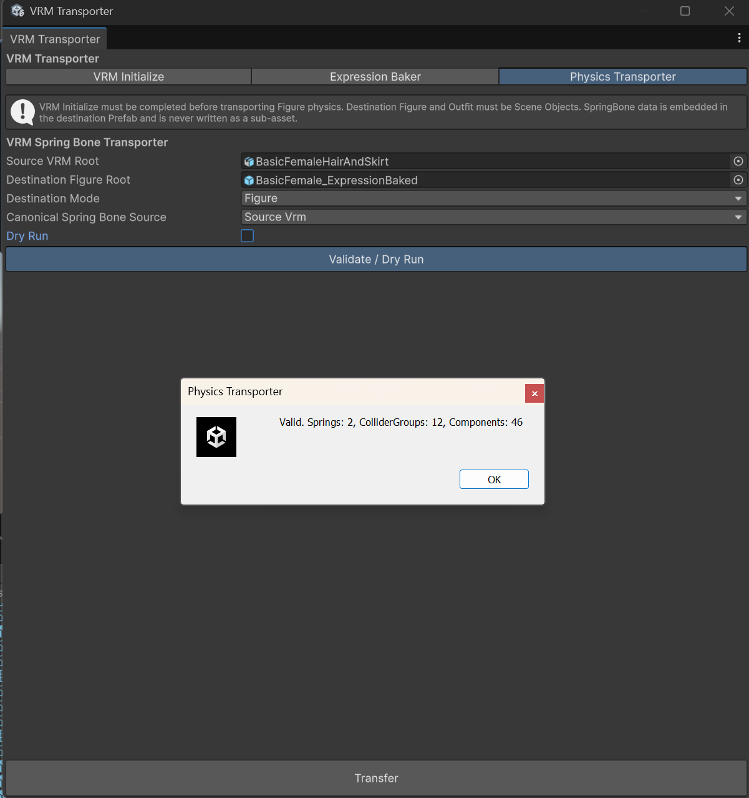
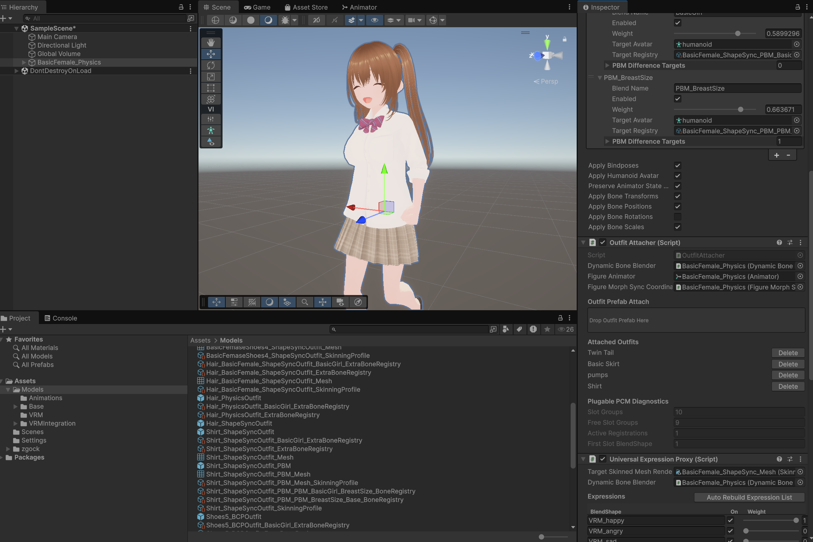

ShapeSync VRM Integration ガイド (vrm.html) - 第 3 章
本ドキュメントは、Unity 向け 3D アバター着せ替え・体型変形ミドルウェア ShapeSync における VRM アバター連携機能（UniVRM 統合・VRM Initialize・Expression Baker・Physics Transporter） を解説する第 3 章ガイドです。tutorial.html（基盤 FBM）および advanced.html（PBM / BCP / PCM）の概念をベースに、VRM 特有の構造化、MCM 表情ベイク、および SpringBone 揺れもの物理の転送手順を解説します。
1. 概要とワークフローの全貌
ShapeSync の公式ドキュメントは、以下の 3 章構成で記述されています。
第一章: tutorial.html (Getting Started)
└ 基本的な Figure 化、FBM (Full Body Morph) 制御、および Outfit (シャツ) の基礎アタッチ
第二章: advanced.html (Advanced Features)
└ 応用機能: 部位別モーフ (PBM)、ボーンポーズ補正 (BC Profile)、突き抜け防止 (PCM)
第三章: vrm.html (VRM Integration) ← 本ドキュメント
└ VRM10 構造化、MCM 機構による表情ベイク、および SpringBone 揺れもの物理の転送・連動エディタツール Tools > zgock > ShapeSync > VRM Transporter ウィンドウの 3 つのタブ UI、および物理アセットの分離・転送ワークフローに対応した構成です。
2. 前提条件 (UniGLTF & UniVRM)
ShapeSync で VRM 連携機能を利用するには、Core 機能に加えて以下の前提環境が必要です。
- UniGLTF および UniVRM パッケージの導入:
プロジェクトに適合する UniGLTF および UniVRM 1.0 (UniVRM10) パッケージが導入されていること（UniVRM の依存パッケージとして UniGLTF が含まれます）。 - スクリプトコンパイルシンボルの追加:
Project Settings > Player > Script Compilation > Scripting Define SymbolsにSHAPESYNC_USE_UNIVRMを追加し、Apply します。 - エディタツールの起動:
メニューバーからTools > zgock > ShapeSync > VRM Transporterを開きます。
3. VRM Transporter の全貌と推奨ワークフロー
VRM Transporter ウィンドウは、タブ形式で順序立てられた以下の 3 つのステップで構成されています。
| タブ順序 | タブ名 | 主な目的・処理内容 | デフォルト候補名 |
|---|---|---|---|
| ステップ 1 | VRM Initialize |
ShapeSync Figure に VRM10Object / Vrm10Instance / 空の標準 Expression を構築。 |
<入力名>_VRMInit.prefab |
| ステップ 2 | Expression Baker |
MCM 機構を用いて、Base と FBM ターゲット間で共通する MorphTarget Expression を一括ベイク。 | <入力名>_ExpressionBaked.prefab |
| ステップ 3 | Physics Transporter |
Vrm10Instance.SpringBone 物理や VRM10SpringBoneColliderGroup を Figure / Outfit に転送。 |
<宛先名>_Physics.prefab<宛先名>_PhysicsOutfit.prefab |
【技術的必須前提に関する重要な注記】
ガイド上の推奨作業順序はVRM Initialize → Expression Baker → Physics Transporterですが、Physics Transporterを実行するための技術的必須前提条件は「VRM Initializeが完了した Figure」です。Expression Bakerによる表情ベイクの完了は推奨手順ですが、物理転送の実行における技術的必須前提ではありません。

4. ステップ 1: VRM Initialize による VRM 構造の初期化
Figure Builder で生成した ShapeSync Figure を VRM アバターとして動作させるためには、UniVRM 1.0 規格に適合するコンポーネント構造（VRM10Object アセット、Vrm10Instance、Humanoid、および空の標準 VRM10Expression アセット）が必要です。
※ 注意:
VRM Initializeは、入力 Figure のクローンに対して上記の VRM 1.0 構造を新規構築する工程であり、元 VRM から表情データを転送・取り込む工程ではありません。表情データのベイク処理は次のExpression Bakerで行います。
操作手順 (VRM Initialize タブ)
VRM Transporterウィンドウを開き、VRM Initializeタブを選択します。- フィールドを設定します：
- Source ShapeSync Figure: 第一章（Tutorial）で作成した Figure、または最終統合で PBM / BCP / PCM を引き継ぐ場合は、第二章（Advanced）で更新・再生成した Scene 上の Figure を指定します。
- VRM Asset Relative Folder:
VRM/（生成フォルダ相対パス）
- 「Create ShapeSync Ready VRM」 ボタンをクリックします。
- Save ダイアログが表示されます。任意の出力パス・ファイル名を選択して保存します（デフォルト候補名:
<入力名>_VRMInit.prefab）。 - 結果: Figure の BlendShape や FBM を一切書き換えることなく、
VRM10Object/Vrm10Instance/Humanoidおよび空の標準 Expression アセットが正しく組み込まれた Init Prefab が出力・保存されます。


5. ステップ 2: Expression Baker による MCM 表情ベイク
素体の頭部や顔つきが FBM（BasicGirl 等）によって変化した際、目や口の表情 BlendShape と体型変形が干渉することを防ぐため、ShapeSync では Expression Baker を使用します。Expression Baker は MCM (Morph Controlled Morph) パイプラインにより、Base VRM とすべての FBM ターゲット VRM の表情アセットを解析・合成し、MCM ベイクによって対応する Base / FBM VRM 間で表情が体型変化へ自然に追従する状態を構築します。
仕様および制約事項
- 適用対象の範囲: ベイクの対象となるのは、MorphTarget（BlendShape）を使用する Base および全 FBM source VRM に共通して定義されている Expression のみです（材質変更や UV 移動のみの Expression は対象外です）。全 FBM source VRM に存在しないカスタム Expression がある場合、その Expression はスキップ候補として UI 上に表示されます。
- 顔 Renderer の対応条件: Base VRM および各 FBM source VRM の顔 Renderer は、頂点数と Figure の Base / FBM 顔頂点位置が対応している必要があります。
- 生成 BlendShape: 出力メッシュには
VRM_*およびMCM_*の BlendShape が生成されます。既存の同名ベイク済み Shape が存在する場合は、新しい出力 Prefab 側で置き換えられます。
操作手順 (Expression Baker タブ)
Expression Bakerタブを選択します。- 基本参照を設定します：
- ShapeSync Ready Figure: ステップ 1 で作成した Scene 上の
VRMInitFigure オブジェクト - Figure Renderer: Figure の顔/頭部
SkinnedMeshRenderer - Base VRM Renderer:
BasicFemaleの顔/頭部SkinnedMeshRenderer - Base Source VRM: 元の
BasicFemaleHairAndSkirt.vrmオブジェクト
- ShapeSync Ready Figure: ステップ 1 で作成した Scene 上の
- FBM Source VRMs セクションで 「Generate Target Entries」 をクリックします。
- 追加された項目の FBM BlendName に
BasicGirl、Target VRM Renderer にBasicGirlの顔 Renderer、Source VRM にBasicGirlHairAndSkirt.vrmを指定します。 - 「Bake Expressions and Create Baked Prefab」 ボタンをクリックします。
- Save ダイアログが表示されます。任意の出力パス・ファイル名を選択して保存します（デフォルト候補名:
<入力名>_ExpressionBaked.prefab）。 - 結果: MCM 表情ベイクが完了し、FBM 体型変形を行っても表情が自然に追従・同期する表情ベイク済み Prefab が出力・保存されます。


6. VRM 物理アセットの分離と Outfit 化 (事前準備)
Physics Transporter で物理を転送する前に、教材用アセット BasicFemaleHairAndSkirt.vrm および BasicGirlHairAndSkirt.vrm から、髪とスカートの揺れものパーツを抽出・分離し、ShapeSync Outfit Prefab として独立構築します。
※ 単一 Renderer 制約の注意: 現行の Outfit Builder は複数の
SkinnedMeshRendererを含む Outfit には対応していません。そのため、本手順で作成する Hair および Skirt の各 Prefab は、各 Outfit Root の配下に単一のSkinnedMeshRendererのみを保持する構成とします。
手順 1: 髪 (Hair) メッシュの抽出と Prefab 化
- シーン上に配置した
BasicFemaleHairAndSkirt.vrmを右クリックし、Prefab > Unpack Completelyを実行します。 Hairメッシュおよび該当する髪のボーン階層以外の不要なオブジェクトを削除し、Hairメッシュのみの独立した GameObject（単一SkinnedMeshRenderer）とします。- Project ウィンドウにドラッグ＆ドロップし、髪専用 Prefab
BasicFemale_Hair.prefabとして保存します。
手順 2: Mesh Separation によるスカート (Skirt) の分離抽出
- メニューバーから
Tools > zgock > ShapeSync > Mesh Utilityを開きます。 Mesh Separationタブを選択します。Source RendererフィールドにBasicFemaleHairAndSkirtの BodySkinnedMeshRendererを指定します。- 対象のマテリアルスロット（本教材アセットにおける選択例:
Skirtまたは*_CLOTH_*）を選択します。 - 「Generate Separated Mesh Prefab」 ボタンをクリックし、単一 Renderer のスカート Prefab
BasicFemale_Skirt.prefabとして保存します。

手順 3: ターゲット VRM (BasicGirl) の分離処理
- ターゲットとなる
BasicGirlHairAndSkirt.vrmに対しても、同様に手順 1（髪抽出）および手順 2（スカート分離）を実行します。 - それぞれ単一 Renderer 構成の
BasicGirl_Hair.prefabおよびBasicGirl_Skirt.prefabを生成・保存します。
手順 4: Outfit Builder による Outfit 化
- メニューバーから
Tools > zgock > ShapeSync > Outfit Builderを開きます。 - 共通フィールド（Figure 参照）を設定します：
- Figure Root: 最終統合に使用する ShapeSync Figure（第一章の Figure、または PBM / BCP / PCM を含める最終統合では第二章 Advanced で更新・再生成した Figure）を指定します。
- Figure Animator: 上記で指定した Figure の Humanoid
Animatorを指定します。
- 髪 (
Hair) Outfit の作成順序:- Figure Root と Figure Animator を設定します。
- Base Outfit Root:
BasicFemale_Hair、Registry Id:hair-1、Registry Name:Hair1を設定します。 - 「Generate Target Entries」 ボタンをクリックします。
- 生成された
BasicGirl行の Target Outfit Root フィールドに、対応するBasicGirl_Hairを設定します。 - 「Generate SkinnedMesh Outfit Prefab」 を実行し、
Hair_ShapeSyncOutfit.prefabを出力・保存します。
- スカート (
Skirt) Outfit の作成順序:- Figure Root と Figure Animator を設定します。
- Base Outfit Root:
BasicFemale_Skirt、Registry Id:skirt-1、Registry Name:Skirt1を設定します。 - 「Generate Target Entries」 ボタンをクリックします。
- 生成された
BasicGirl行の Target Outfit Root フィールドに、対応するBasicGirl_Skirtを設定します。 - 「Generate SkinnedMesh Outfit Prefab」 を実行し、`Skirt_ShapeSyncOutfit.prefab` を出力・保存します。

7. ステップ 3: Physics Transporter による物理転送と段階的検証
Physics Transporter タブを使用して、Source VRM の Vrm10Instance.SpringBone 物理データ（VRM10SpringBoneJoint や VRM10SpringBoneColliderGroup）を Figure および各 Outfit Prefab へ転送・適用します。
動作条件およびアタッチメント仕様
- Source VRM 条件: 有効な
Vrm10InstanceおよびVrm10Instance.SpringBoneデータを保持している必要があります。 - Figure Mode の宛先条件: 有効な
Vrm10InstanceとAnimatorを保持する Initialize 済み Figure である必要があります。 - Outfit Mode の宛先条件: Scene Object、Scene 上の Prefab インスタンス、または Prefab Mode の Root を指定します（Project ウィンドウ上の Prefab アセットを直接指定することはできません）。
Canonical Spring Bone Source: Figure Mode 専用のパラメータです（Outfit Mode では無効化されます）。- アセット保存と非独立仕様: 転送された SpringBone データは、Figure Mode では出力 Figure Prefab 内に組み込まれ、Outfit Mode では Outfit 側の SpringBone データとして埋め込まれます（着用時に ShapeSync のコンパニオン機能が自動接続します）。独立した物理 sub-asset ファイルは生成されません。
手順 1: Figure への SpringBone 物理転送
VRM TransporterウィンドウのPhysics Transporterタブを開きます。- フィールドを設定します：
- Source VRM Root: 元の
BasicFemaleHairAndSkirt.vrm - Destination Figure Root: ステップ 1（またはステップ 2）で作成した Scene 上の Figure オブジェクト
- Destination Mode:
Figure - Canonical Spring Bone Source:
SourceVrm
- Source VRM Root: 元の
- 【必須確認手順】「Validate / Dry Run」 ボタンをクリックします。ポップアップダイアログで SpringBone 数や ColliderGroup 数にエラーがないことを確認します。
- 「Transfer」 ボタンをクリックします。Save ダイアログで出力先とファイル名を選択します（デフォルト候補名:
<宛先名>_Physics.prefab）。 - 結果: Validate を通過した Spring / ColliderGroup が転送・組み込まれた Figure Prefab が出力保存されます。


手順 2: 髪 (Hair) Outfit への SpringBone 物理転送
Physics Transporterタブの参照を変更します：- Source VRM Root: 元の
BasicFemaleHairAndSkirt.vrm - Destination Outfit Root: 第 6 章で作成した Scene 上の
Hair_ShapeSyncOutfitオブジェクト - Destination Mode:
Outfit
- Source VRM Root: 元の
- 【必須確認手順】「Validate / Dry Run」 を実行して検証します。
- 「Transfer」 をクリックし、Save ダイアログで出力保存します（デフォルト候補名:
<宛先名>_PhysicsOutfit.prefab）。
手順 3: 【中間実機確認】Figure + 髪 Outfit での動作チェック
- シーン上に物理転送済み Figure を配置し、Play モードを開始します。
OutfitAttacher.TryAttach()でHair_PhysicsOutfitを着用させます。- 確認ポイント: 歩行アニメーション再生中、
DynamicBoneBlenderのBasicGirlFBM スライダー（0.0 → 1.0）を操作した際、髪の毛が体型変更に追従しながらVrm10Instance.SpringBoneの計算に従って揺れ動くことを確認します。
手順 4: スカート (Skirt) Outfit への SpringBone 物理転送
Physics Transporterタブの参照を変更します：- Destination Outfit Root: 第 6 章で作成した Scene 上の
Skirt_ShapeSyncOutfitオブジェクト - Destination Mode:
Outfit
- Destination Outfit Root: 第 6 章で作成した Scene 上の
- 【必須確認手順】「Validate / Dry Run」 を実行後、「Transfer」 をクリックして Save ダイアログで出力保存します。
手順 5: シャツ (Shirt) Outfit の Physics 向け正規化
※ 注意（物理対応への正規化）: VRM Physics Figure と組み合わせる最終統合では、Shirt も
Physics TransporterのOutfitMode を通してください。これにより、Outfit に残存する VRM 由来の物理情報と補助ボーン情報が、実際に使用するボーンだけへ正規化されます。Shirt 自体に有効な SpringBone がない場合でも、この正規化出力を使用します。
Physics Transporterタブの参照を変更します：- Source VRM Root: 元の
BasicFemaleHairAndSkirt.vrm - Destination Outfit Root: 第一章・第二章で作成した Scene 上の
Shirt_ShapeSyncOutfitオブジェクト - Destination Mode:
Outfit
- Source VRM Root: 元の
- 【必須確認手順】「Validate / Dry Run」 を実行して検証します。
- 「Transfer」 をクリックし、Save ダイアログで Physics 正規化版の
Shirt_PhysicsOutfit.prefabとして出力・保存します。
8. 最終統合検証 (ここまでのガイドの総仕上げチェックリスト)
ここまでのガイドの締めくくりとして、第一章（tutorial.html）、第二章（advanced.html）、および第三章（vrm.html）で構築した各種パーツをシーン上でアタッチし、それぞれの機能が個別に正常動作することを確認する検証チェックリストです。
※ 注意: 第二章 (Advanced) で作成した PBM（胸部モーフ）、BC Profile（靴のポーズ補正）、PCM（足の裏貫通防止）は任意で組み合わせ可能な応用要素です。VRM ガイド単独の必須前提条件ではありません。
全身アタッチ手順
- シーン上に物理転送済み VRM Figure を配置します。
- Play モードを開始し、
OutfitAttacherを使用して以下の衣装アタッチを実行します：- シャツ (Tutorial): 本章の手順 5 で Physics 対応に正規化した
Shirt_PhysicsOutfit - 靴 (Advanced - 任意): 第二章で作成した
Shoes1_ShapeSyncOutfit(+ BCP + PCM) - 髪 (VRM): 本章で作成した
Hair_PhysicsOutfit(+ SpringBone) - スカート (VRM): 本章で作成した
Skirt_PhysicsOutfit(+ SpringBone)
- シャツ (Tutorial): 本章の手順 5 で Physics 対応に正規化した
個別機能動作チェックリスト
Play モードでの歩行アニメーション再生中、以下の各項目を個別および複合して確認します：
- 歩行中の FBM 体型変更確認:
DynamicBoneBlenderでBasicGirlFBM スライダー（0.0 ↔ 1.0）を動かした際、素体・衣装が破綻なく追従変形するか。 - VRM Expression (表情) 切り替え確認:
Joy/Blink/AAなどの表情を切り替えた際、FBM 体型変形中であっても表情がズレずに正常同期するか。 - SpringBone 揺れもの物理確認: 歩行や体型変更に伴い、髪およびスカートの
Vrm10Instance.SpringBoneが自然に揺れ動くか。 - 既存 Outfit (シャツ / 靴) の着せ替え確認: 第一章のシャツや第二章の靴が正確な位置にアタッチされ、変形に追従するか。
【感動の統合達成成果】:
すべての要素が揃ったアバターは、歩行動作にあわせて髪とスカートの SpringBone がしなやかに跳ね、体型スライダー（FBM）や胸部スライダー（PBM）の変更、靴のポーズ補正（BCP）とメッシュ貫通防止（PCM）、そして VRM 表情の連動がすべて調和して同時に機能します。3 つのガイドを通じて構築した、完成度の高い 3D アバター着せ替えシステムの全貌を実機で体験できます！

9. トラブルシューティング & 注意事項
SHAPESYNC_USE_UNIVRMシンボル未定義エラー:
VRM Transporterウィンドウが開かない、またはビルドエラーが発生する場合は、Player Settingsの Scripting Define Symbols にSHAPESYNC_USE_UNIVRMが追加されているか確認してください。- Scene Object の参照制限:
Expression Bakerの ShapeSync Ready Figure、Base / FBM source VRM、各 Renderer、およびPhysics Transporterの Destination 参照フィールドには、Scene Object または Prefab Mode root を指定します。Project ウィンドウ上の Prefab asset を直接指定することはできません。 - アセット出力フォルダ制限:
VRM Asset Relative Folderのフォルダ制限（Assets/や../の指定不可）は、VRM InitializeおよびExpression Bakerでのアセット出力先設定に関する項目です（Physics Transporterは専用の Save ダイアログで出力先を選択します）。